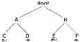

Backtraling is a form of recursion
The usual scenario is that you are faced with a number options and you must choose these. After you make your choice you will get a nie wet of options just what set of options you get depends on whathis procedure is repeated over and over untill you reach a final ste is a goal state; if you didn't,it isn'tConceptually, you start at the root of a tree; the tree probably has some good leaves and some bad leaves, though may be that the leaves are all good or all bad. You want to get to a good leaf. At each node,begining with the root,you choose one of its children to move to, and you keep this up untill you get to a leaf.
Suppose you get to a bad leaf.You can backtrack to continue the search for a good leaf by revoking your most recent choise,and trying out the next option in that set of options. If you run out of options, revoke the choise that got you ou end up at here, and tryanother choice at that node. If you end up at the root with no options left, there are no good leaves to be found.
This meeds an example:
In this example we drw a picture of aree. The tree isan abstract model of te possible sequences of choices we could make. There is also a data structure called a tree, but usually we don't have a data structure to tell us what choise we have. (if we do have an actual tree data structure, backtracking on it is called depth-first tree searching.)
boolean solve(Node n){
if n is a leaf node{
if the leaf is a goal node, return true
else return false
}else {
for each child c of n{
if solve(c) succeeds, return true
}
return false
}
}
Notice that the algorithm is expressed as a boolean function. This is essential to understanding the algorithm. If solve() that means node n is part of a solution-- that is node n is one of the nodes on a path from the root to some goal node We say tat n is solvable. If solve(n)is false, then there is no path that includes n to any goal node.
Hence, to dicide whether any non-leaf node n is solvable (part of path to a goal node),all you have to do is test whether any child of n is solvable. This is done recursively, on each child of n in the above code this is done by the lines
for each child c of n{
if solve(c) succeds, return true
}
return false
Eventually the recursion will "button" out at a leaf node. If the leaf node is a goal node, it is solvable, if the leaf node is not a goal node, it is not solvable. This is ou base case in the sbove code, this is done by the lines.
if n is a leaf node{
if the leaf is a goal node, return true
else return false
}
The backtracking algorith is simple but important. You should understand it thoroughly. Another way of startig it is as follows:
Backtracking is a rathe typical recursive algorithm, and any recursive algorithm can be rewritten as a stack algorithm in fact, that is how your recursive algorithms are translated into machine of assembly language.
boolean solve(Node n){
put node n on the stack;
while the stack is not empty{
if the node at the top of the stack is leaf{
if it is a goal node, return true
else pop it off the stack
}
else{
if the node at the top of the stak has untired children
push the next untired child onto the stack
else pop the node off the stack
}
return false
}
Starting from the root, the only nodes that can be pushed onto taack the children of the node currently on the top of the stack, and these are only pushed on the child at a time hance, the nodes on the stack at all times decribe a valid path in the tree. Node are reoved from the stack only when it is known that they have no goal nodes among their descendents. Therefore, if the root node gets remoed (making the stack empty), there must have been no goal nodes at all, and no solution to the problem.
When the stack algorithm terminates successfully, the nodes on the stack form (in reverse order) a path from the root to a goal node.
Similarly, when the recursive algorithm finds a goal node, the path information is embodied (in reverse order) in the sequence of recursive calls. Thus as the recursion unwinds, the path can be recovered one node at a time, by (for instance)priting the node at the current level, or storing it in an array.
Here is the recursive backtracking algorithm, modified slightly to print (in reverse order) the nodes along the successful path:
boolean solve(Node n){
if n is a leaf node{
if the leaf is a good node{
print n
return true
}
else return false
}else{
for each child c of n{
if solve(c) succeeds{
print n
return true
}
}
return false
}
}
All of these versions of the backtracking algorithm are pretty simple, but when applied to a real prolem, they can get pretty cluttered up with details. Even determining whether the node is a leaf can be complex
for example, if the path represents a series of moves in a chess endgame problem the leaves are the checkmate and statemate solutions
to keep to program clean, therefore, tests like this should be buried in mathods in a class game, for example, you could test whether a node is a leaf by writing a gameover method(or you could even calledisLeaf). This method would encapsulate all the ugly details of figuring out whether any possible moves remain.
Notice that the backtracking algorithm require us to keep track, for each node on the current path, which of its as children have been tried already (so we don't have to try them again). In the above code we made theis look simple, by just saying for each child c of n. in reality, it may be difficult to figure out what the possible children are, and there may be no obvious way to step through them. In chess, for example, a node can represent one arrangement of pieces on a chessboard, and each child of that node can represent the arrangement after some piece has made a legal move. How do you find these children, and how do you keep track
The most straighforward way to keep track of which children of the node have been tried is as follows: Upon intial entry to the node(that is, when you first get there from above), make a list of all its children. As you try each child, take it off the list. When the list is empty. there are no remaining untired children, and you can return "failure". This is a simple approach, but it may require quite a lot of additional work.
There is an easier way to keep track of which children have been tried. If you can define an ordering on the children. If there is an ordering, and you know which child yo just tried, you can determine which child to try next.
For example, you might be able to number the children 1 through n, and try them in numerical order. Then if you have just tried child k,you know that you have already tried children 1 through k-1, and you have not yet tried children k-1 througj n. Or, if you are trying to color a map with just four colors, you can always try red first, then yellow, then green, then blue. If child yellow fails, you know to try child green next. If you are searching a maze, you can try choise in the order left, straight, right(or perhaps norht, east, south, west)
It isn't always easy to find a simple way to order the children of a node. In the chess game example, you might number you pieces for terhaps the squares of the board and try them in numerical order, but in addition each piece may also have several moves, and these must also be ordered.
For starters, let's do the simplest possible example of backtracking, which is searching an actual tree. We will also use the simplest kind of tree, a binary tree.
A binary tree is a data structure comosed of nodes . One node is designated as the root node. Each node can refernce (point to)zero, one , or two other nodes, which are called its children. The children are referred to as the left child and/or the right child all nodes are reachable (by one or more steps) from the root node, and there are no cycles. For our purposes, altghough this is not part of the definition of a binary tree, we will say that a node might or might not be a goal noe and will contain its name. The first example in this paper (which we repeat here)shows a binary tree.
Here's defination of the BinaryTree class.
public class BinaryTree{
BinaryTree leftChild = null;
BinaryTree rightChild= null;
boolean isGoalNode=false;
String name;
BinaryTree(Strin name, BinaryTree left, BinaryTree, boolean is GoalNode){
this.name=name;
leftChild=left;
rightChild=right;
this.isGoalNode=isGoalNode;
}
}
Next we will create a TreeSearch class, and in it we will define a method makeTree()which constructs the above binary tree.
static BinaryTree makeTree(){
BinaryTree root, a,b,c,d,e,f;
c= new BinaryTree("C",null, false);
d= new BinaryTree("D",null, false);
e= new BinaryTree("E",null, false);
f= new BinaryTree("F",null, false);
a= new BinaryTree("A",C,d,false):
b= new BinaryTree("Root",a,b,false);
return root;
}
Here's a main program to create a binary tree and try to solve it.
public static void main(String args[]){
tree = makeTree();
System.out.println(solvable(tree))};
}
And finally, here's the recursive backtracking routine to "solve" the binary tree by finding a goal node.
static boolean solvable(BinaryTree node){
/*1*/ if(node == null) return false;
/*2*/ if(node.isGoalNode) return true;
/*3*/ if(solvable(node.leftChild)) return t;
/*4*/rue if(solvable(node.rightChild)) return true;
/*5*/ return false;
}
And finally, here's recursive backtracking routine to "solve" the binary tree by finding a goal node.
static boolean solvable(BinaryTree node){
/*1*/ if (node == null) return false;
/*2*/ if (node.is GoalNode) return true;
/*3*/ if (solvable(node.leftChild)) return true;
/*4*/ if (solvable(node.rightChild)) return true;
/*5*/ return false;
}
Here's what the numbered lines are doing
This program runs correctly and produces the unenlightening result true.
Each time we ask for another node, we have to check if it is null, in the above we put that check as the first thing in solvable. An alternative would be to check first whetther each child exists, and recur only if they do.Here's that alternative version.
static boolean solvable(BinaryTree node){
if(node.isGoalNode)return true;
if(node.leftChild i=null && solvable(node.leftChild)) return true;
if(node.rightChild ! = null && solvable(node.rightChild)) return true;
return false;
}
I think the first version is simpier, but the second version is slightly more efficient.
one of the things that simplifies the above binary tree search is that, at each choise point, you can ignore all the previous choices. Previous choice don't give you any information about what you should do next, as far as you and the know, both the left and the right child are possible solution in many problems, however, you may be able to eliminate children immediately, without recursion
Conider for example, the problem of four-coloring a map it is a theorem of mathematics that any map on a place, no matter how convoluted the countries are, can be colored withe at most four colors, so that no two coutries that share a border are the same color.
One of the things that simplifies the above binary tree search is that, at each choise point, you can ignore all the previos choices. Previous choises don't give you any information about what you should do next, as far as you know, both the left and the right child are possible solutions in many problems, however, you may be able to eliminate children imediately, without recursion.
Consider, for example, the problem of four-coloring a map. It is a theoream of mathematics that any map on a plane, no matter how convoluted the countries are, can be colored with at most four colors so that no two countries that share a border are the same color.
To color a map, you choose a color for the first country, them a color for the second, and so on, untill all countries are colored.
There are two ways to do this:
Let's apply each of these two methods to the problem of coloring a checkeboard.This should be easily solvable, after all, a checkerboard only needs two colors.
Used by method 1 to check (at a leaf node) whether the entire map is colored corrctly.
Used by method 2 to check, at every node, whether there is an adjacent node already colored with the given color.
Used by both methods to find the next "contry" (actually, the row column of the next square on the checeboard).
Here's the code for method 1:
boolean explore1(int row, int column, int color){
if(row>= NUM_ROWS)return mapisOk();
map[row][column] = color;
for(int nextColor = RED; nextColor < = BLUE; nextColor++){
int[] next = nextRowAndColumn(row,column);
if(explore1(next[0],next[1],nextColor)) return true;
}
return false;
}
And here's the code for method 2:
boolean explore2(int roe, int column, int color){
if(row > = NUM_ROWS)return true;
if(okToColor(row, column, color)){
map[row][column] = color;
for(int nextColor = RED; nextColor < = BLUE; nextColor++){
int[] next = nextRowAndColumn(row,column);
if (explore2(next[0],next[1], nextColor)) return true;
}
}
return false;
}
Those appear pretty similar, and you might think they are equally good. However, the timing information suggests otherwise.
| 2 by 3 map | 3 by 3 map | 3 by 4 map | |
| Method 1: | 60ms. | 940ms. | 60530ms.(1minute) |
| Method 2: | 0ms. | 0ms. | 0ms |
The zeros in the above table indicate times too short to measure (less than 1 millisecond). Why this huge difference? Eithere of these methods could have exponential growth. Eliminating a node automatically eliminates all of its descendent, and this will often prevent exponential growth Conversely, by waiting to check untill a leaf node is reached, exponential growth is practically guaranteed. If there is any way to eliminate children (reduce the set of choices) do so.
Often out first try at a program doesn't work, and we need to debug it. Debuggers are helpful, but sometimes we need to fall back on inserting print statements. There are some simple tricks to making effictive use of print statements. These tricks can be applied to any program, but are especially useful you are trying to debug recursive routines.
Often, the best debugging technique is to print every method call and return (or at least the most important ones). You probably want to print, for each method, what parameters it came in with, and what value it leaves with However, if you just print a long list of these, it's hard to match up method exits with thier corresponding entries endenting to show the level of nesting can help.
Don't clutter up your actual code more than you must. Also, remember that code inserted for debugging purpose can itself contain bugs, or (in the worst case) can affect the resylts, so be very carefyl with it.
Here's our debugging code. For this trivial program, there's almost more debugging code than actual coe, but in larger programs the proportions will be better.
static String indent = "";
static String name(BinaryTree node){
if(node == null) return null;
else return node.name;
}
static void enter(BinaryTree node){
System.out.println(indent + "entering solvable(" + name(node)+")");
indent = indent + "| ";
}
static boolean yes(BinaryTree node){
System.out.println(indent +"Entering solvable("+ name(node)+")");
indent = indent+"| ";
}
static boolean yes(BinaryTree node){
indent= indent.substring(3);
System.out.prinln(indent +"solvable("+name(node)+")");
return true;
}
boolean no(BinaryTree node){
indent= indent.substring(3);
System.out.println(indent +"solvable("+name(node)+")returns false");
return false;
}
To use this code, we modify solvable as follows:
static boolean solvable(BinaryTree node){
enter(node):
if(node == null) return no(node);
if(node.isGoalNode) return yes(node);
if(solvable(node.leftChild)) return yes(node);
if(solvable(node.rightChild)) return yes(node);
return no(node);
}
And we get these result:
Entering solvable(Root)
| Entering solvable(A)
|| Entering solvable(C)
||| Entering solvable(null)
||| solvable(null) returns false
||| Entering solvable(null)
||| solvable(null) returns false
|| solvable(C) return false
|| Entering solvable(D)
||| Entering solvable(null)
||| solvable(null) return false
||| Entering solvable(null)
||| solvable(null) return false
|| solvable(D) return false
| solvable(A) return false
| Entering solvable(B)
|| Entering solvable(E)
|| solvable(E) returns true
| solvable(B) returns true
solvable(Root) returns true
true
Writing debugging statement is programming, too. Often it's as much work to debug the debugging statements as it is to debug the actual program. Once your program is working, why throw thic code away?
Obviously, you don't want to print out all this debugging information from a program you are ready to submit (or to turn over to your manager). You could comment out your debugging calls, but that can be a lot of work. What's more, in the above example, you would have to replace every return(yes(node)) with return(true), and every return(no(node)) with return false. With all these changes, you might introduce new bugs into your program.
The simple solution is to make you debugging statements conditional. For example,
static final boolean debugging = false;
static void enter(BinaryTree node){
if(debugging){
System.out.println(indent +"Entering solvable("+ name(node)+")");
indent = indent+"| ";
}
}
static boolean yes(BinaryTree node){
if(debugging){
indent= indent.substring(3);
System.out.println(indent +"solvable("+ name(node)+")");
}
return true;
}
static boolean no(BinaryTree node){
if(debugging){
indent = indent.substring(3);
System.out.println(indent + "solvable("+ name(node)+")");
}
return false;
}
In industry, actual programs often have mulitpe flags to control different aspects of debugging. Don't worry too much about making you code larger, modern compiiers will notice that since the variable debugging is final, it can never be true, and the controlied code will be discarded.
If an exception is thrown,you can get information about just where it heppened by sending it the message
printStackTrace(PrintStream). Since an Exception is an object like any other, you can create and throw you won Exceptions. However, java programmers don't always realize that you can create an Exception without throwing it. For example, the follwing code.
new Exception("Checkpoint Charlie").printStackTrack(System.out);
will print out a massage something like this and the program will then contine normally. That is, the above code just acts like a print statement.
java.lang.Exception: Checkpoint Charlie
at TreeSearch solvable(TreeSearch.java.53)
at TreeSearch.solvable(TreeSearch.java:57)
at TreeSearch.main(TreeSearch.java:72)
at_SHELL38.run(_SHELL38.java:16)
at bluej.runtime.ExceServer.suspendExcution(Unknown Source)
I call the follwing puzzle "Candy's Puzzle" for historical reasons. You have some number n of black marbles and the same number of white marbles, and you have a plying board which consists simply of a line of 2n+ spaces to put the marbles in Start with the black marbles all at one end isay, the left, the white marbles all the other end, and a tree space in between.
| |
|
|
|
The goal is to reverse the positions of the marbles
|
|
|
|
The black marbles can only move to the right, and the white marbles can only move to the left (nobacking up). At each move, a marble can either:
For example, you could make the following seqence of moves.
| starting position: |
|
|||||
|---|---|---|---|---|---|---|
| Black moves ahead: |
|
|||||
| White jumps: |
|
|||||
| Black moves ahead: |
|
|||||
| Black jumps: |
|
|||||
| White moves ahead |
|
|||||
| Stuck! |
The backtrackin method is named solvable and return a boolean. In solvable we sahll need to check whether we are at a leaf, which in this case mean a position form which no further moves are possible. This isn't so easy.
Now to the program. The man program will intialize the board, and call a recursive backtracking routine to attempt to solve the puzzle. The backtracking routine will either succeed and print out a winning path, or it will fall, and the main program will have to print out the bad news.
The backtracking methods is named solvable and returns a boolean in solvable we shall need to check wheter we are at a leaf, which in this case means a position from which no further moves are possible. This isn't so easy.
Each possible move will result in a new board position, and these new board positions are the children of the current board position. Hence to fing the children of a node (that is of a board positin), we need only find the possible moves from that node. Remember that it is also highly desirable to find an ordering on these possible moves.
Here it is time to stop and take thought. To make progress, we must analyze the game to some extent. Probably a number of pproaches would work, and what follows is bassed on the way i worked it out if you were to program this puzzle, you might find a different but equally valid approach.
First, notice that if a marble has a move, that move is unique if it can move ahead one square, then it cannot jump if it can jump, it cannot move ahead one square. This suggests that to find the possible moves, we might assign number to the marbles, and check each marble in turn. When we have looked at all the marbles, we have looked at a the possible moves the would require having a table to keep track of where each marble is or else somehow'making' each marble with its number and searching the board each time find the marble we want. Neither alternative is very attractive.
Next, notice that for a given board position, each moarble occuples a unique space. Hence, instead of talking about moving a particulr marlbe, we can talk abut moving the marble in a particular space If a move is possible form a given space, then that must be the only move possible form that space, because if the marble in that space has move, it is unique. There is a slight complication because not every contains a marble, but at least the spaces(unlike the marbles) stay in one place.
Now we have a simpler ordering of moves to use in our program. Just chcek, in order, the 2n+1 spaces of the board. For each space, either zero or one moves is possible. With this understanding, we can write a boolean method canMove(int[] board, int position) which determines wherher a move is possible from the given position:
We write another method int[] makesmove(int[] oldBoard, int position) that will take a board and a position, make a move from that position, and return as its value a new board. (We could write this somewhat more efficient by changing the old board, rather than creating a new one, but here we are more concerned with simplecity) in technical jargon, makemove is "applicative" rather than "multative"
Along with canMove and makeMove, we are using methods puzzleSolved and printBoard meanings that sould be obvious.
boolean solvable(int[] board){
if (puzzleSolved(board)){
return true;
}
for (int position = 0; positon<Board_Size;position++){
if(canMove(board,positon)){
int[] newBoard = makeMove(board,position);
if(slvable(newBoard)){
printBoard(newBoard);
return true;
}
}
}
return false;
}
Along with canMove and makeMove, we are using methods puzzleSolved and pringBoard with meaning that should be obvious.
Here is some output form the program:
Notice that the solution is given in reverse order: BLACK starts out on the left and WHITE on the right, as in the last line, I've added line numbers to the actual output in order in order to emphasize this point. Backtracking always produces its results (sequence of choices) in reverse order; it is up to you, the programmer, to reverse the result again to get the in the correct order